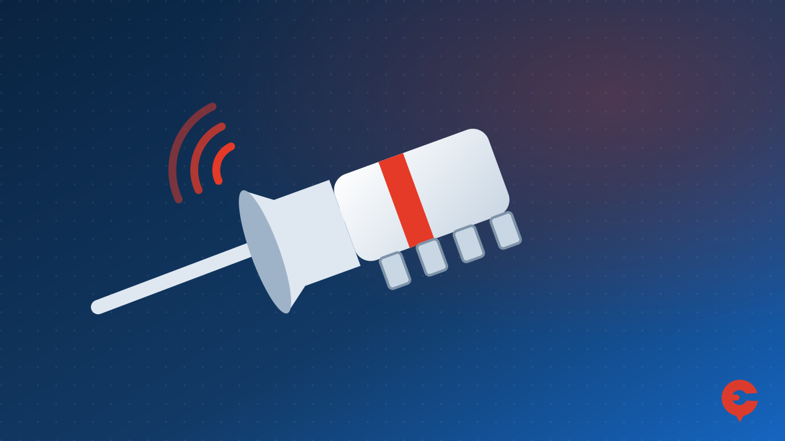

16 Ağustos 2026'da Türksat 3A yayınları yeni uydulara taşındı: ne değişti, kanallar nasıl geri gelir, marka marka rehberler.

Dikmen · Çankaya · Ankara
Kaliteli malzeme, temiz ve sağlam işçilik
Tuncay Özer · Çankaya Uydu Teknik Servis
Çankaya ve çevresinde çanak anten arıza, çanak anten kurulumu, merkezi sistem arıza tamiri ve televizyon kablo çekme işleriniz için hemen arayın (hizmet bölgelerimiz). Yerinde arıza tespiti ve kaliteli malzemeyle hızlı çözüm için hemen arayın.
Yerinde
Arıza Tespiti
18 Yıl
Tecrübe (2008'den beri)
Çankaya
ve çevresi
7 Gün
Açık · Hafta sonu 11:00–18:00
16 Ağustos 2026'da Türksat 3A yayınları yeni uydulara taşındı: ne değişti, kanallar nasıl geri gelir, marka marka rehberler.

Frekans değişikliği ya da güncelleme sonrası kaybolan uydu kanallarını geri getirmek için yapılacaklar.
Dahili uydu alıcılı televizyonlarda Türksat kanal araması: genel ayarlar ve marka marka menü adımları.

Ekranda 'sinyal yok' yazısı çıktığında evde yapabileceğiniz kontroller ve arızanın kablo, LNB, çanak ayarı ya da merkezi sistemden mi kaynaklandığını anlamanın yolları.
Ankara'da Türksat 42° Doğu uydusu için elevasyon, azimut ve LNB açısı değerleri ile çanak anteni doğru yöne çevirmenin adımları.

Uydu alıcısı ve televizyonda LNB frekansı, 22 kHz, LNB gücü ve DiSEqC ayarlarının doğru değerleri ve anlamları.